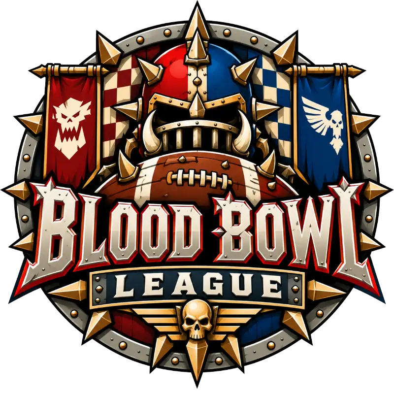
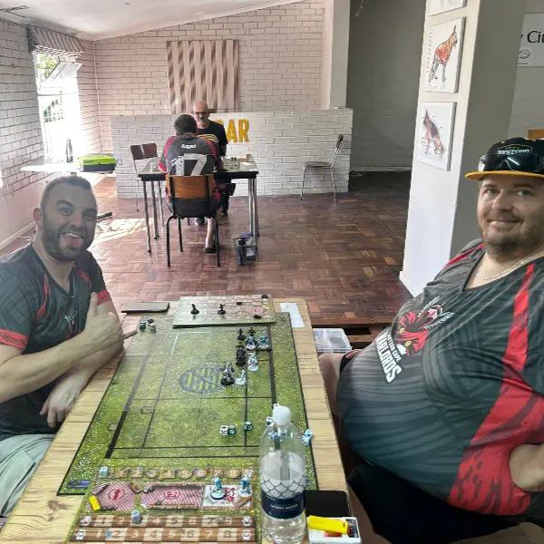
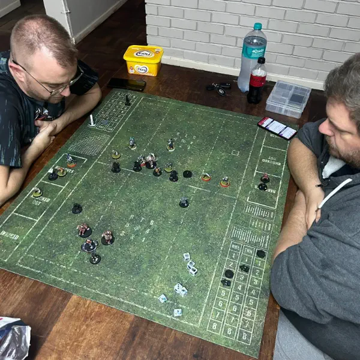

Touchdowns
and casualties.
One of the club's biggest scenes - a running league, sevens tournaments and new coaches joining every season. Here's how to get on the pitch.
What is Blood Bowl?
Blood Bowl is Games Workshop's fantasy football game. Two coaches each field a team of Orcs, Elves, Skaven, Undead or one of many other races and try to score touchdowns - or flatten the other side trying.
Games are quick, tactical and full of swingy dice moments, which is why it's become one of the most popular games at the club, with veteran players returning and new coaches joining all the time.

The setting
Fantasy football, with more blood than football.
Nuffle's sacred sport
Blood Bowl is set in the Warhammer fantasy world, where an old Dwarf rulebook gave rise to a sport worshipped as the creation of the god Nuffle. Every race in the Old World now fields teams.
Fame, fortune and funerals
Teams travel to packed stadiums, star players earn fortunes, and the commentators are as bloodthirsty as the crowd. Winning matters - but so does flattening the other side's best player.
How a game plays
Two teams of eleven, two halves of eight turns each. Score more touchdowns than your opponent to win.
Move your players
On your turn, each player can take one action: move, block, blitz, pass, hand-off or foul.
Block
Knock opponents down with special block dice. Strength and support from team-mates decide how many dice you roll.
Turnovers
Fail a risky roll - drop the ball, fall over, get knocked down - and your turn ends on the spot. Plan your moves in the safest order.
Armour and injury rolls
Knocked-down players roll against their armour. Break it, and an injury roll decides whether they're stunned, knocked out or carried off the pitch.
Speed or violence
Fast teams like Elves and Skaven run rings around the defence; tough teams like Orcs and Chaos Dwarves grind forward and break bones.
Building a team
Hire your squad with a starting budget, then watch it grow over a season.
Pick your race
Each race has its own roster of positions - linemen, blitzers, throwers, catchers and big guys - plus re-rolls and team staff to buy.
Players level up
Players earn Star Player Points for touchdowns, casualties and completions, and spend them on new skills. Over a league season your team becomes legendary - or a graveyard.
Smaller and faster
Blood Bowl Sevens uses seven players on a smaller pitch for quick, chaotic games - the format of our April 2026 tournament.
The hobby side
Every team is a painting project with its own colours and kit.
A team at a time
A team is around a dozen to sixteen models, so it's a manageable project - and big guys like Trolls and Ogres are a treat to build.
Team colours
Design your own kit, numbers and logos. Bright home and away colours make a team pop on the pitch.
The full stadium
Painted pitches, dugouts and scoreboards make a match feel like game day.
The league
Third edition rules
Season 2 is being played with the new 3rd edition rules. Coaches used the sevens tournament to try new teams before placements were decided.
Fixtures and the current table are on the Standings page.
The Fossil Fuels take the crown
The inaugural league ended in March 2026 with a dominant run from Matt's Fossil Fuels.
- 1stFossil FuelsMatt
- 2ndThe Lawyers of HellDaniel
- 3rdNight FuriesBrett
Sevens
Our first sevens tournament
Smaller teams, faster games and a braai afterwards. It gave members a chance to try out new teams and gave newcomers a taste of Blood Bowl before Season 2.
Top four
- =1stBrettHumans
- =1stMattOrcs
- 3rdJannieElves
- 4thSteven John OvensChaos Dwarves
Teams seen on our pitch
Every race that's taken the field in a club league, tournament or club night game so far.
- Amazons
- Chaos
- Chaos Dwarves
- Dark Elves
- Elves
- Gnomes
- Halflings
- Humans
- Khemri
- Khorne
- Lizardmen
- Necromantic
- Norse
- Orcs
- Skaven
- Undead
- Vampires
From the touchline


Get on the pitch
Come on a Wednesday
Club night runs 7-10 PM and there's usually a Blood Bowl game on. Come and watch one first.
Play a learning game
Ask one of the coaches to walk you through a game. The rules click quickly once you've played.
Pick a team
Speed, armour, finesse or pure violence - chat to the coaches about which race suits how you like to play.
Join a season
Enter the next league season or a sevens tournament. Watch the Dispatch and Facebook for sign-ups.
Keen to coach? Message the club and we'll let you know when the next season or sevens opens.
Pull up a chair.
No army? No problem. We'll lend you one, teach you the rules and get a brush in your hand.